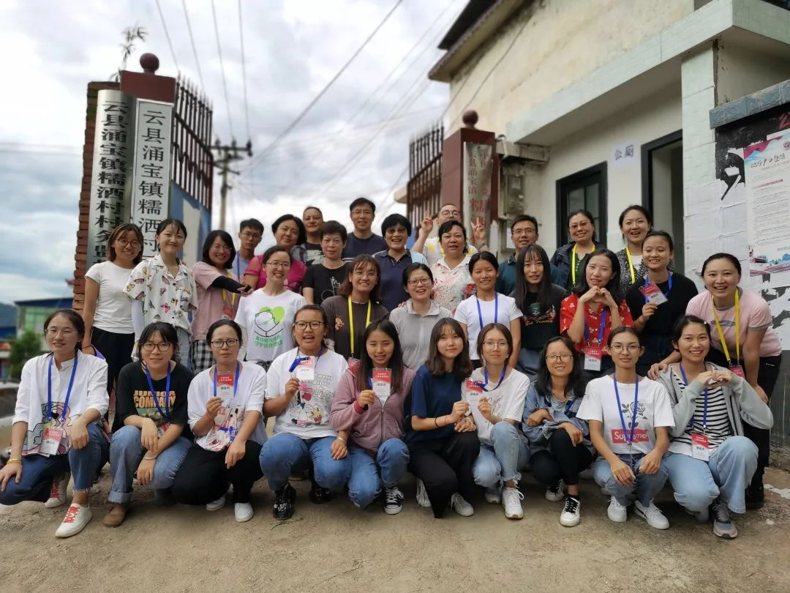
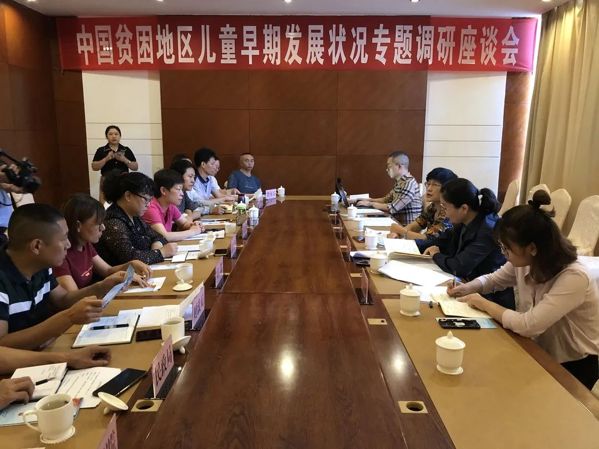
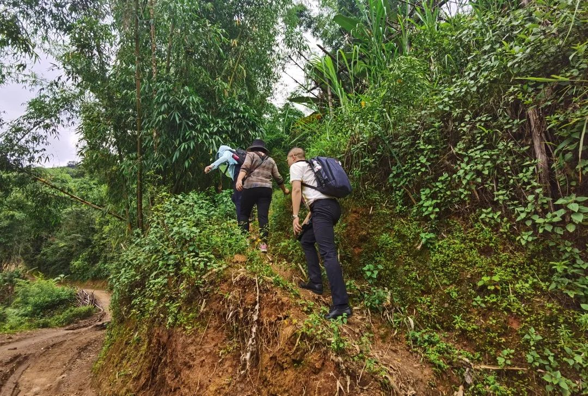
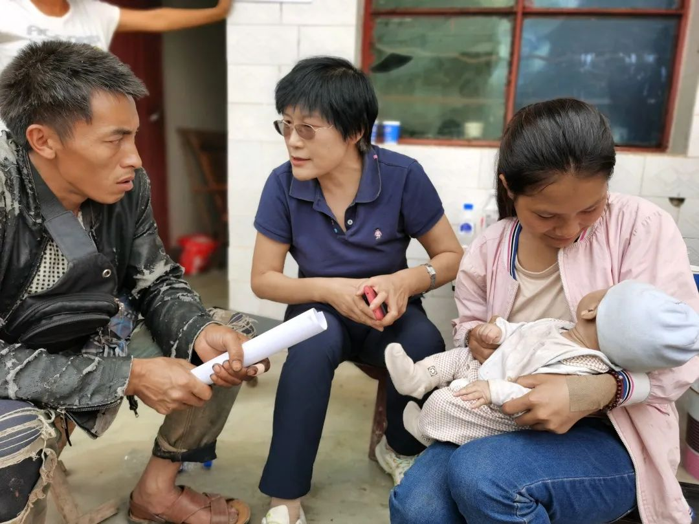
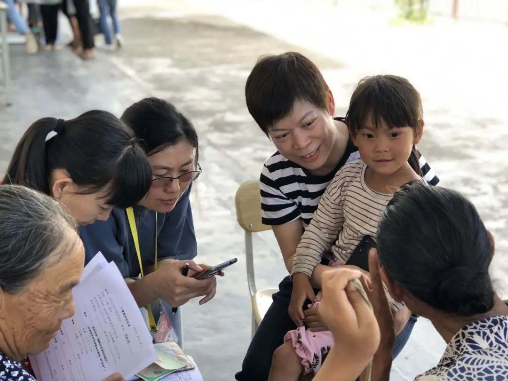
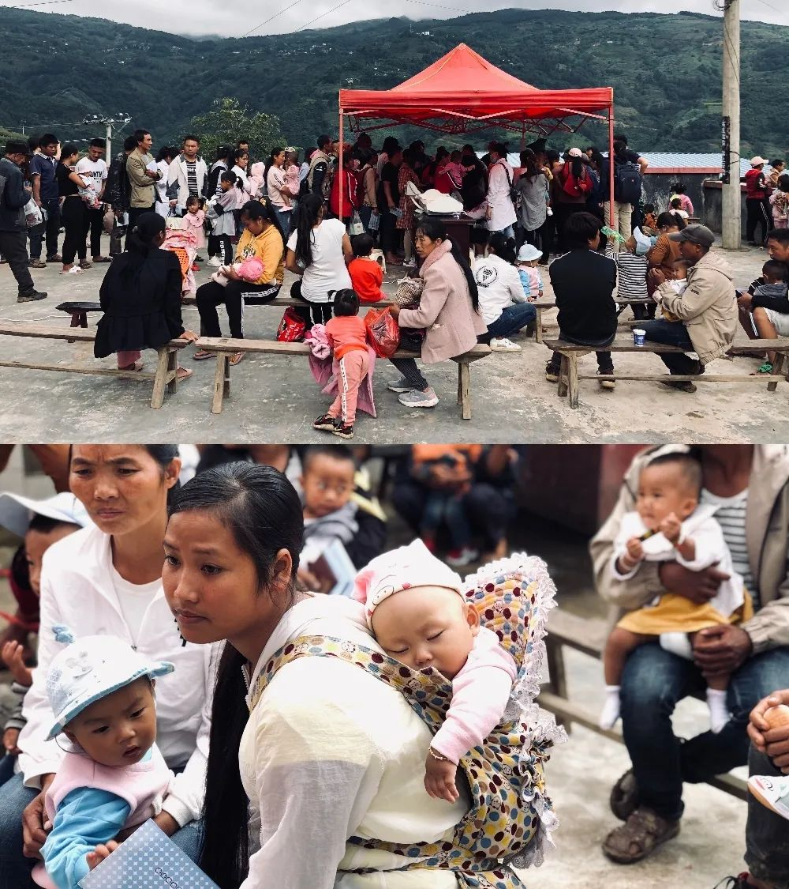
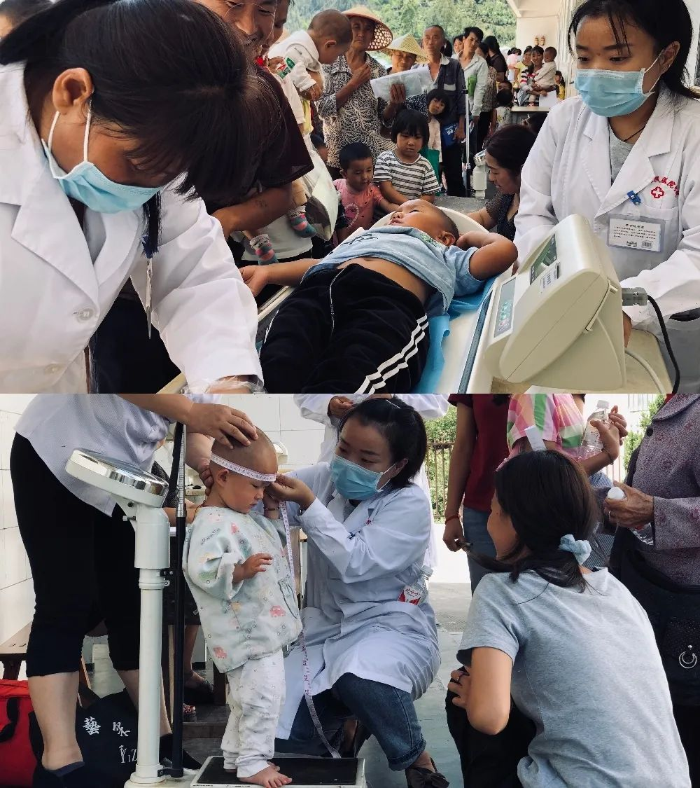

2020-08-30 16:32 来源：澎湃新闻·澎湃号·政务
2020年，是我国完成脱贫攻坚、制定“十四五规划”和编制《中国儿童发展纲要（2021-2030）》的重要时间节点。习近平总书记高度重视教育扶贫工作，指出要把发展教育扶贫作为治本之计，切断贫困的代际传递。
为落实习近平总书记的重要工作指示精神，充分发挥中国儿童中心校外教育优势，积极推进贫困地区儿童发展事业，中国儿童中心和中国发展研究基金会，在全国妇联和全国政协人口环境资源委员会的指导下，成立课题组联合开展“贫困地区儿童早期发展状况调研”。本次调研将覆盖15省（自治区）28个县的0-6岁儿童和家庭。课题组将深入自然村，通过县、村、家长问卷以及儿童发展筛查量表，全面考察儿童的发展、家庭、教育、营养情况，以及当地县域村域整体情况。
8月24日，中国儿童中心党委书记丛中笑带领来自中心科研部、学前教育部、早期儿童发展部、营养健康中心、教育活动部等多个部门的同事与中国发展研究基金会的同僚一道，奔赴被选中的28个贫困县中最远的云南省云县开展调研。由此，拉开此项大规模调研工作的序幕。
中国儿童中心党委书记丛中笑带队赴云南省云县开展调研
8月26日上午，专题调研座谈会在云南省云县召开，当地县政府、卫健、教体、财政、民政、妇联等多个部门参与了会议。会上，中国儿童中心党委书记丛中笑就本次调研的目的、意义、调研工具和抽样方法做了详细介绍。云南省临沧市云县妇联主席张丽芳对云县儿童发展基本情况作了介绍。调研组成员与参会各单位负责人就云县儿童发展现状和《贫困地区儿童发展规划》的执行情况进行了深入交流。
8月26日上午，中国贫困地区儿童早期发展状况专题调研座谈会在云南省云县召开
与此同时，调研组对云县妇联组织的巾帼志愿者们进行了家庭调查问卷访谈培训，提升了志愿者作为访问员的操作能力。并在现场开展了突发问题模拟演练。
会后，调研组不畏山高路险，立即深入云县新合村和糯洒村进行为期三天的调查访问。调研组顶着炎炎烈日，在村向导的带领下沿着坎坷曲折的山间小路走进一户户百姓家，深入观察了解儿童的生活养育环境，为家长普及科学育儿知识。同时，调研组根据云县山区地理环境复杂、村民居住分散等特点和实地勘察情况，实时调整调研进度与方案，保证调研质量的同时大大提高了工作效率。
调研组深入云南省云县新合村和糯洒村进行为期三天的调查访问
中国儿童中心党委书记丛中笑开展入户调研
此次云县调研，云南省、市、县、镇、村几级妇联干部亲自指导部署安排，各部门高度重视，各镇人大主席、村支书和村委会等现场组织协调。云南省妇联家儿部部长邓良双全程陪同，临沧市妇联副主席杨桂梅也一同深入一线，了解儿童养育环境，观察亲子互动情况，实地考察贫困地区儿童早期发展状况。
云南省妇联家儿部部长邓良双深入一线，了解儿童养育环境
当地家长和儿童积极参与调研，认真完成每项调研内容，主动与调研组沟通，为调查研究提供了可靠有效的数据。
 云县家长和儿童积极参与调研
此次调研恰逢重要政策时间窗口，深入一线摸底贫困地区儿童发展情况，丰富研究数据，形成《贫困地区儿童早期发展调研报告》，将有助于让广大民众了解儿童发展状况，同时支持政府决策、为相关政策、纲要、战略性的规划提供参考。
缅怀！16名中国军人在维和行动中牺牲（附名单）
网红“拉姆”直播时遭前夫纵火重度烧伤，网友一天内捐助百万
同济医院护士和丈夫看演出身亡，武汉通报：善后工作处理完毕
马上评｜奇葩论文作者被处理，奇葩论文什么时候被彻底否定？
中青报：励志鸡汤叫不醒热衷“摸鱼”的年轻人
大谈“导师崇高师娘优美”论文作者被处理：追回已拨项目资金
美国驻华大使离任之前密集释放信号：美国不寻求围堵中国
全球新冠确诊病例累计超3000万，死亡逾94万例